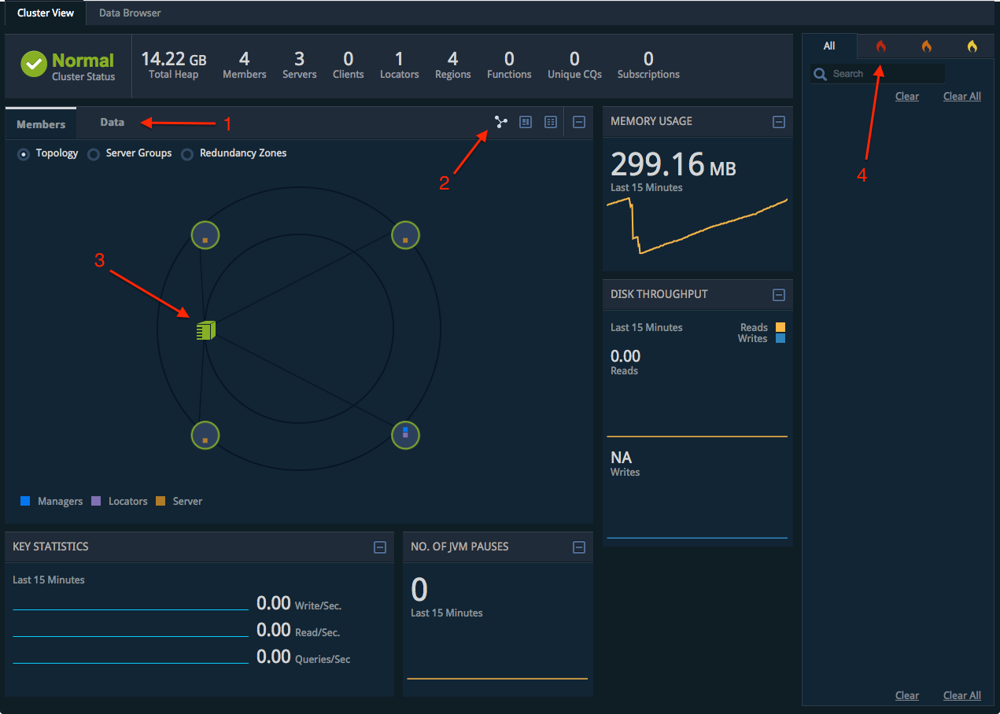
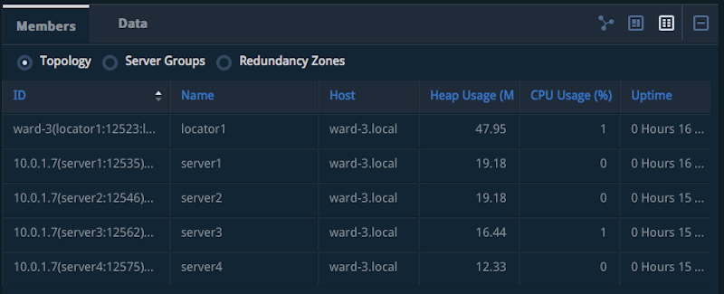
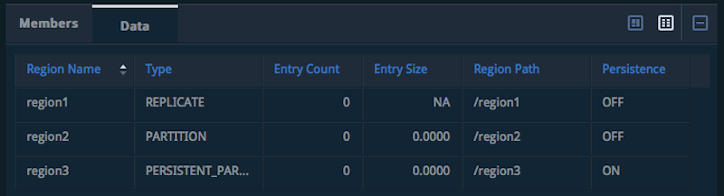
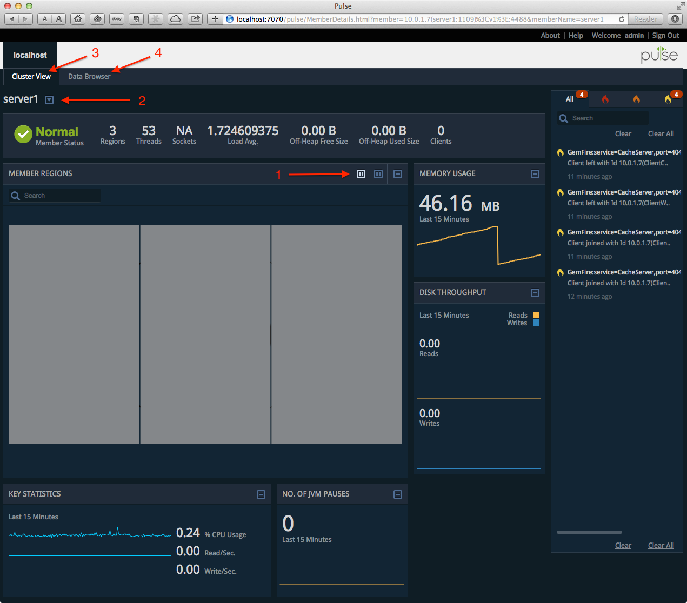
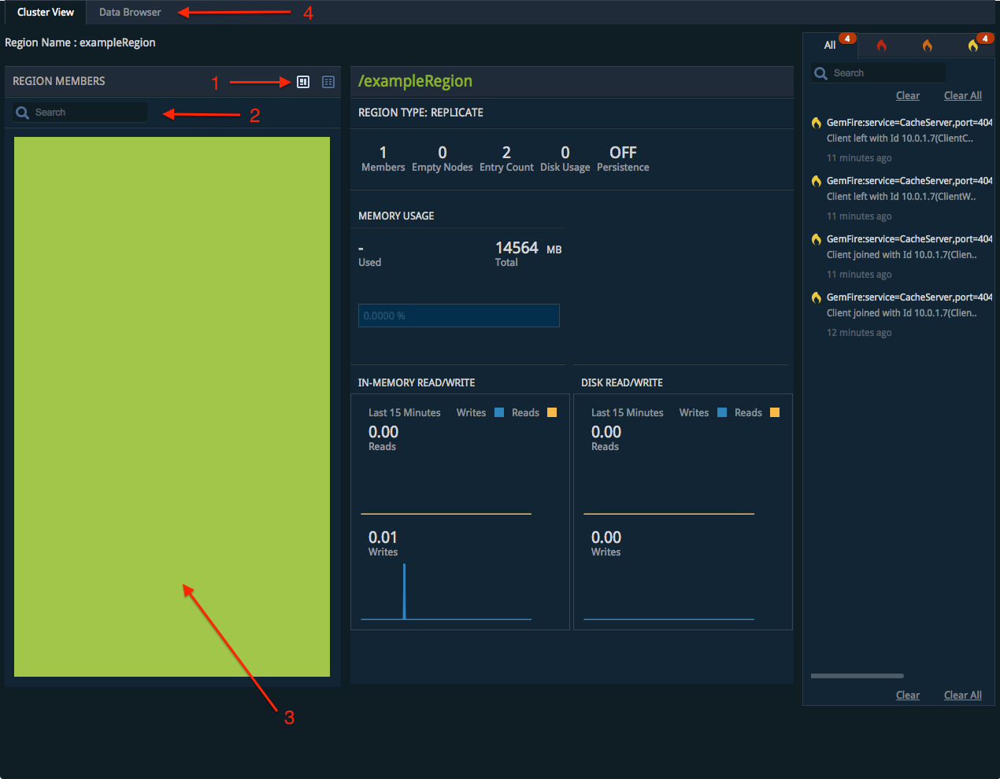
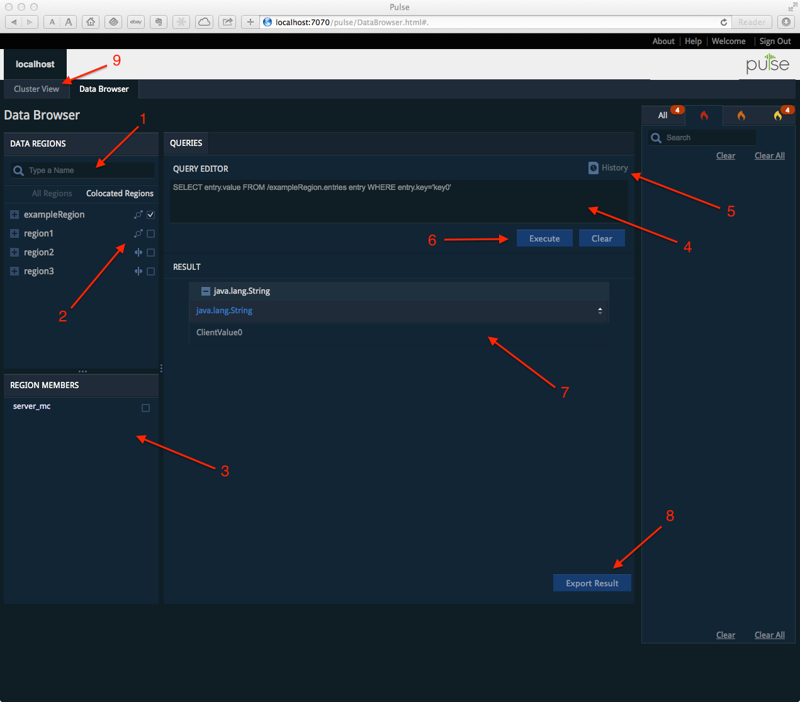
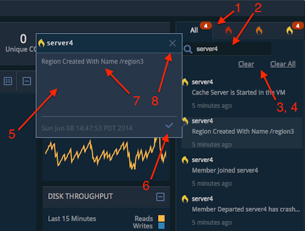

Pulse Quick Start (Embedded Mode)
Use Pulse in embedded mode to monitor a Geode deployment directly from a Geode JMX Manager. By default, the embedded Pulse application connects to the local JMX Manager that hosts the Pulse application. Optionally, configure Pulse to connect to a Geode system of your choice.
To run Pulse in embedded mode:
Configure a Geode member to run as a JMX Manager node, specifying the HTTP port on which you will access the Pulse Web application (port 7070 by default). For example, the following command starts a Geode locator as a JMX Manager node, using the default HTTP port 7070 for the Pulse application:
gfsh gfsh> start locator --name=loc1Note: Geode locators become JMX Manager nodes by default. To start a non-locator member as a JMX Manager node, include the
--J=-Dgemfire.jmx-manager=trueoption. To specify a non-default port number for the HTTP service that hosts the Pulse application, include the--J=-Dgemfire.http-service-port=port_numberoption when starting the JMX Manager node.When the JMX Manager node boots, it starts an embedded Jetty instance and deploys the Pulse Web application at the specified or default HTTP port or 7070 by default.
gfshautomatically connects to the manager when you start it in this way. If you already started a manager process earlier, use theconnectcommand ingfshto connect to that process.Access the embedded Pulse application from a Web browser. If you are connected to the Geode cluster using gfsh, use the
start pulsecommand to load the correct URL in your browser:gfsh> start pulseOr, enter the URL http://address:http-service-port/pulse directly in your Web browser, substituting the address and HTTP port of the manager. For example, you access Pulse on the local locator machine from Step 1 at the URL http://localhost:7070/pulse.
If you have configured authentication for the Pulse application, enter the username and password of a valid Pulse account in the login screen. Otherwise, enter the default “admin” in both fields. Click Sign In to continue.
After you log in, Pulse displays the main cluster view for the local distributed system. See Using Pulse Views.
Note: When running in embedded mode, the Pulse application connects only to the JMX Manager running in the locator or member that hosts Pulse. This enables you to monitor all members of that distributed system. You can also view (but not monitor) connected WAN clusters, and can view gateway senders and receivers that are configured in the local cluster.
Hosting Pulse on a Web Application Server
Host Pulse on a dedicated Web application server to make the Pulse application available at a consistent address, or to use SSL for accessing the Pulse application. When you host Pulse in this way, you also configure Pulse to connect to a specific locator or JMX Manager node for monitoring.
To host Pulse on a Web application server:
- Set the
http-service-portproperty to zero (-Dgemfire.http-service-port=0) when you start your Geode JMX Manager nodes. Setting this property to zero disables the embedded Web server for hosting the Pulse application. Create a
pulse.propertiesfile somewhere in the classpath of your Web application server. For example, if you are hosting Pulse on Tomcat, create thepulse.propertiesfile in the$TOMCAT_SERVER/libdirectory.Define the following configuration properties in the
pulse.propertiesfile:Property Description pulse.useLocatorSpecify “true” to configure Pulse to connect to a Geode Locator member, or “false” to connect directly to a JMX Manager. When Pulse connects to a Geode locator, the locator provides the address and port of an available JMX Manager to use for monitoring the distributed system. In most production deployments, you should connect Pulse to a locator instance; this allows Pulse to provide monitoring services using any available JMX Manager.
If you specify “false,” Pulse connects directly to a specific JMX Manager. If this manager is not available, the Pulse connection fails, even if another JMX Manager is available in the distributed system.
pulse.hostSpecify the DNS name or IP address of the Geode locator or JMX Manager machine to which Pulse should connect. You specify either a locator or JMX Manager address depending on how you configured the pulse.useLocatorproperty.pulse.portSpecify the port number of the Geode locator or the HTTP port number of the JMX Manager to which Pulse should connect. You specify either a locator or JMX Manager port depending on how you configured the pulse.useLocatorproperty.If you configured
pulse.useLocator=false, thenpulse.portmust correspond to thehttp-service-portsetting of the JMX Manager.pulse.jmxUserNameIf you configured authentication for the Geode JMX Manager node, specify a valid JMX user name that the Pulse application will use to authenticate to the JMX Manager. **Note:**The JMX account that Pulse uses must have both read and write privileges.
See Configuring a JMX Manager for information about configuring authentication for JMX Manager nodes.
pulse.jmxUserPasswordSpecify the password of the JMX user account to use for authentication at startup. For example, with this configuration Pulse connects to the locator at mylocator[10334] and accesses any available JMX Manager:
pulse.useLocator=true pulse.host=locsrv.gemstone.com pulse.port=10334 pulse.jmxUserName=pulseapp pulse.jmxUserPassword=pulsepassWith this configuration Pulse accesses only the JMX Manager instance at manager1[8080]:
pulse.useLocator=false pulse.host=jmxsrv.gemstone.com pulse.port=8080 pulse.jmxUserName=pulseapp pulse.jmxUserPassword=pulsepass(Optional.) Configure authentication for the Pulse Web application using the instructions in Configuring Pulse Authentication.
Deploy the Pulse Web application to your application server. Geode installs the
pulse.warfile in thetools/Pulsesubdirectory of your Geode installation directory. Depending on your application server, you may need to copy thepulse.warfile to a deployment directory or use a configuration tool to deploy the file.Access the Pulse application using the address, port, and application URL that you configure in your Web application server. For example, with Tomcat the default URL is http://address:8080/pulse. Your application server provides options for configuring the address, port, and application name; substitute the correct items to access the deployed Pulse application.
Pulse connects to the locator or JMX Manager that you configured in the
pulse.propertiesfile, authenticating using the credentials that you configured in the file.If you have configured authentication for the Pulse application, enter the username and password of a valid Pulse account in the login screen. Otherwise, enter the default “admin” in both fields. Click Sign In to continue.
After you log in, Pulse displays the main cluster view for the distributed system to which it has connected. See Using Pulse Views.
Configuring Pulse Authentication
Pulse requires all users to authenticate themselves before they can use the Pulse Web application. If you have configured JMX authentication on the Geode JMX Manager node, the Pulse Web application itself may also need to authenticate itself to the Geode JMX Manager node on startup.
Authenticating the Pulse Application to the JMX Manager
If you run Pulse in embedded mode, the Pulse application runs on the JMX Manager node and no JMX authentication is required. You do not need to specify valid JMX credentials to start an embedded Pulse application.
If you host Pulse on a Web Application server (non-embedded mode) and you configure JMX authentication on the Geode manager node, then the Pulse Web application must authenticate itself with the manager node when it starts. Specify the credentials of a valid JMX user account in the pulse.properties file, as described in Hosting Pulse on a Web Application Server.
Note: The credentials that you specify must have both read and write privileges in the JMX Manager node. See Configuring a JMX Manager.
Authenticating Pulse Users
Pulse implements user authentication using the Spring security framework. The authentication configuration is specified in the spring-security.xml file, which is stored in the WEB-INF directory of Pulse WAR file. The spring-security.xml file contains bean definitions for role-based resource access, authentication profiles, and authentication handlers. The file also contains a default authentication manager bean definition.
Pulse uses a profile-based authentication configuration. You can can choose to use either the default configuration profile or a custom configuration. The default profile uses the Spring security simple in-memory User Details Service to define a single user with the credentials:
| User Name: | admin |
| Password: | admin |
| Role: | ROLE_USER |
Pulse uses this default authentication profile if you do not specify a profile when starting the application, or if you specify the default profile at startup using the system property:
-Dspring.profiles.active=pulse.authentication.default
You can also configure Pulse to use a custom authentication configuration by specifying activating the custom profile at startup with the system property:
-Dspring.profiles.active=pulse.authentication.custom
Using a custom configuration enables you to use either the simple in-memory User Details Service or an external properties file to authenticate users to the application. Even if you choose to use the default Spring security simple in-memory User Details Service, using a custom authentication configuration enables you to define your own user credentials rather than using the default “admin” account.
Note: Geode also supports using an LDAP provider for Pulse authentication. See Using LDAP Authentication in Pulse
To configure and use a custom authentication configuration:
Create a directory in which you will store the custom authentication configuration. For example:
$ mkdir /opt/pulse-configEnsure that the new directory you created is available on the Java CLASSPATH:
$ export CLASSPATH=$CLASSPATH:/opt/pulse-configCreate a new text file named
pulse-authentication-custom.xmlin the new directory:$ touch /opt/pulse-config/pulse-authentication-custom.xmlUse a text editor to add the bean definitions for the authentication managers and providers that you want to use. The following listings show the example file contents for using the in-memory User Details Service and an external properties file:
Example pulse-authentication-custom.xml for Spring simple in-memory User Details Service
<beans:beans > <authentication-manager> <authentication-provider> <user-service id="userDetailsService"> <user name="john" password="johnspassword" authorities="ROLE_USER " /> <user name="bob" password="bobspassword" authorities="ROLE_USER" /> </user-service> </authentication-provider> </authentication-manager> </beans:beans>Example pulse-authentication-custom.xml for external properties file
<beans:beans > <authentication-manager> <authentication-provider> <user-service properties="classpath:pulse-users.properties"> </user-service> </authentication-provider> </authentication-manager> </beans:beans>With file-based authentication mechanism, you define the names and passwords for valid Pulse users in a
pulse-users.propertiesfile, which must be available in the classpath of the Pulse application. Each line in thepulse-users.propertiesfile defines the username, password, and access level for a Pulse user with the format:username=password,role,{enabled | disabled}The role entry must correspond to a valid Spring security role. For example, this entry shows the default “admin” user enabled with basic user access:
admin=admin,ROLE_USER,enabledWhen you start Geode members, specify the custom authentication profile using the
-Dspring.profiles.active=pulse.authentication.customsystem property. For example:gfsh> start server --name=server1 --J=-Dspring.profiles.active=pulse.authentication.customStart Pulse and log in using credentials that are authorized in the custom configuration.
Using LDAP Authentication in Pulse
This section provides instructions for using LDAP authentication with Pulse in either embedded and non-embedded mode.
Embedded Mode (Jetty)
To configure LDAP for Pulse:
Create a directory in which you will store the LDAP authentication configuration. For example:
$ mkdir /opt/pulse-configThe directory name and location are up to you– just make sure you use the same name when specifying the CLASSPATH for the Geode JMX Manager process.
Create a file named
pulse-authentication-custom.xmlwith contents similar to the following and place it under the directory you created in step 1. For example:<beans:beans xmlns="http://www.springframework.org/schema/security" xmlns:beans="http://www.springframework.org/schema/beans" xmlns:context="http://www.springframework.org/schema/context" xmlns:xsi="http://www.w3.org/2001/XMLSchema-instance" xsi:schemaLocation="http://www.springframework.org/schema/beans http://www.springframework.org/schema/beans/spring-beans-3.2.xsd http://www.springframework.org/schema/security http://www.springframework.org/schema/security/spring-security-3.1.xsd http://www.springframework.org/schema/context http://www.springframework.org/schema/context/spring-context-3.2.xsd"> <ldap-server url="ldap://ldap.gemstone.com:389/dc=gemstone,dc=com" /> <authentication-manager> <ldap-authentication-provider user-dn-pattern="uid={0},ou=ldapTesting" group-search-base="cn=PULSEUSER,ou=Groups" group-search-filter="memberUid={1}"> </ldap-authentication-provider> </authentication-manager> </beans:beans>LDAP authentication in Pulse is hardcoded to use the PULSEUSER user group. Make sure you have have created users for this group.
When starting the JMX Manager from gfsh, use the following commands:
gfsh>start locator --name=loc --J=-Dspring.profiles.active=pulse.authentication.custom --classpath=/opt/pulse-configor
gfsh>start server --name=server1 --J=-Dspring.profiles.active=pulse.authentication.custom --classpath=/opt/pulse-configStart Pulse and log in using credentials that are authorized in the LDAP configuration.
Non-Embedded (Standalone Web Server) Mode (Tomcat)
To configure LDAP for Pulse:
Create a directory in which you will store the LDAP authentication configuration. For example:
$ mkdir /opt/pulse-configThe directory name and location of the Pulse configuration files are up to you– just make sure you use the same name when specifying the CLASSPATH for the Tomcat server.
Pass in the Spring profile when starting the web server. In Tomcat, all the VM arguments are set in the variable CATALINA_OPTS, which you can define in your environment configuration file setenv.bat or setenv.sh.
For example, under %CATALINA_HOME%/bin or $CATALINA_HOME/bin, you can create a setenv batch file or script file (if not already present) that sets the following. On Windows:
set CATALINA_OPTS=-Dspring.profiles.active=pulse.authentication.custom set "CLASSPATH=C:\pulse-config"or in Unix/Linux:
CATALINA_OPTS=-Dspring.profiles.active=pulse.authentication.custom export CATALINA_OPTS CLASSPATH=$CLASSPATH:/opt/pulse-configCreate a file named
pulse-authentication-custom.xmlwith contents similar to the following and place it under the directory you created in step 1. For example:<beans:beans xmlns="http://www.springframework.org/schema/security" xmlns:beans="http://www.springframework.org/schema/beans" xmlns:context="http://www.springframework.org/schema/context" xmlns:xsi="http://www.w3.org/2001/XMLSchema-instance" xsi:schemaLocation="http://www.springframework.org/schema/beans http://www.springframework.org/schema/beans/spring-beans-3.2.xsd http://www.springframework.org/schema/security http://www.springframework.org/schema/security/spring-security-3.1.xsd http://www.springframework.org/schema/context http://www.springframework.org/schema/context/spring-context-3.2.xsd"> <ldap-server url="ldap://ldap.gemstone.com:389/dc=gemstone,dc=com" /> <authentication-manager> <ldap-authentication-provider user-dn-pattern="uid={0},ou=ldapTesting" group-search-base="cn=PULSEUSER,ou=Groups" group-search-filter="memberUid={1}"> </ldap-authentication-provider> </authentication-manager> </beans:beans>LDAP authentication in Pulse is hardcoded to use the PULSEUSER user group. Make sure you have have created users for this group.
Deploy the application and start the server.
Configuring Pulse to Use HTTPS
You can configure Pulse to use HTTPS in either embedded or non-embedded mode.
In non-embedded mode where you are running Pulse on a standalone Web application server, you must use the Web server’s SSL configuration to make the HTTP requests secure.
In embedded mode, Geode uses an embedded Jetty server to host the
Pulse Web application. To make the embedded server use HTTPS, you must
enable the http SSL component in
gemfire.properties or gfsecurity-properties.
See SSL for details on configuring these parameters.
These SSL parameters apply to all HTTP services hosted on the JMX Manager, which includes the following:
- Developer REST API service
- Management REST API service (for remote cluster management)
- Pulse monitoring tool
When the http SSL component is enabled, all HTTP services become
SSL-enabled and you must configure your client applications
accordingly. For SSL-enabled Pulse, you will need to configure your
browsers with proper certificates.
Using Pulse Views
Pulse provides a variety of different views to help you monitor Geode clusters, members, and regions.
The following sections provide an overview of the main Pulse views:
Cluster View
The cluster view is a high-level overview of the Geode distributed system. It is displayed immediately after you log into Pulse. Information displays around the perimeter of the cluster view show statistics such as memory usage, JVM pauses, and throughput. You can use the cluster view to drill down into details for individual members and regions in the distributed system.

Use these basic controls while in Cluster view:
- Click Members or Data to display information about Geode members or data regions in the distributed system.
Click the display icons to display the Geode members using icon view, block view, or table view. Note that icon view is available only when displaying Members.
For example, the following shows Geode Members displayed in table view:

- While in block view or table view, click the name of a Geode member to display additional information in the Member View.
- Click Topology, Server Groups, or Redundancy Zones to filter the view based on all members in the topology, configured server groups, or configured redundancy zones. The following shows Geode Regions displayed in table view: 
- While in block view or table view, click the name of a Geode region to display additional information in the Region View.
While in icon view, click a host machine icon to display the Geode members on that machine.
In the Alerts pane, click the severity tabs to filter the message display by the level of severity.
Cluster View Screen Components
The following table describes the data pieces displayed on the Cluster View screen.
| Screen Component | Description |
|---|---|
| Cluster Status | Overall status of the distributed system being monitored. Possible statuses include Normal, Warning, or Severe. |
| Total Heap | Total amount of memory (in GB) allocated to the Java heap across all members. |
| Members | Total number of members in the cluster. |
| Servers | Total number of servers in the cluster. |
| Clients | Total number of clients in the cluster. |
| Locators | Total number of locators in the cluster. |
| Regions | Total number of regions in the cluster. |
| Functions | Total number of functions registered in the cluster. |
| Unique CQs | Total number of unique CQs. Corresponds to the UNIQUE _CQ_QUERY statistic. |
| Subscriptions | Total number of client event subscriptions. |
| Cluster Members | Graphical, block, or table view of the members in the cluster. |
| Topology | Organizes cluster members by DistributedMember Id. |
| Server Groups | Organizes cluster members by server group membership. If no server groups are configured, all members appear under the “Default” server group. |
| Redundancy Zones | Organizes cluster members by redundancy zones. If no redundancy zones are configured, all members appear under the “Default” zone. |
| Host Machine | When you mouse over a machine icon in Topology View, a pop-up appears with the following machine statistics:
|
| Member | When you mouse over a member icon in Graphical View, a pop-up appears with the following member statistics:
|
| Member | In List View, the following data fields are displayed for each member:
|
| Key Statistics | Displays a few key performance measurements of the distributed system (over the last 15 minutes). |
| Write/Sec | Number of write operations per second that have occurred across the cluster. Each put/putAll operation counts as a write; for example, a putAll of 50 entries is counted as one write. |
| Read/Sec | Number of read operations per second that have occurred across the cluster. |
| Queries/Sec | Number of queries per second that have been executed across the cluster. |
| No. of JVM Pauses | Number of times the JVM has paused during the last five minutes to perform garbage collection. |
| WAN Information | If you have configured gateway senders or receivers for a multi-site (WAN) deployment, this box displays whether the remote cluster is reachable (working connectivity represented by a green triangle). |
| Disk Throughput | Total disk throughput for all disks in cluster. |
| Alerts View | Displays alerts for the cluster. |
Member View
When you select an individual Geode member in Cluster View, Pulse displays the regions available on that member, as well as member-specific information such as the configured listen ports.

Use these basic controls while in Member View:
- Click the display icons to display regions using block view or table view.
- Use the drop down menu to select a specific member or search for specific members by name.
- Click Cluster View to return to Cluster View. See Cluster View.
- Click Data Browser to query region data. See Data Browser.
Member View Screen Components
The following table describes the data elements displayed on the Member View screen.
| Screen Component | Description |
|---|---|
| Member Status | Overall status of the member being monitored. Possible statuses include Normal, Warning, or Severe. |
| Regions | Total number of regions hosted on the member. |
| Threads | Total number of threads being executed on the member. |
| Sockets | Total number of sockets currently open on the member. |
| Load Avg. | Average number of threads on the member that are in the run queue or are waiting for disk I/O over the last minute. Corresponds to the Linux System statistic loadAverage1. If the load average is not available, a negative value is shown. |
| Clients | Current number of client connections to the member. |
| Member Regions | Block or table view of the regions hosted on the member. |
| Regions | When you mouse over a region in block view, a pop-up appears with the following data fields:
|
| Regions | In table view, the following fields are listed for each region:
|
| Member Clients | In table view, the following fields are listed for each client:
|
| Key Statistics | Displays a few key performance measurements for the member (over the last 15 minutes). |
| % CPU Usage | Percentage of CPU used by the member. |
| Read/Sec | Number of read operations per second that have occurred on the member. |
| Write/Sec | Number of write operations per second that have occurred on the member. Each put/putAll operation counts as a write; for example, a putAll of 50 entries is counted as one write. |
| Memory Usage | Total memory used on the member in MB. |
| No. of JVM Pauses | Number of times the JVM has paused during the last five minutes due to garbage collection or excessive CPU usage. |
| WAN Information | Displays cluster information. This dialog box only appears if you have configured WAN functionality (gateway senders and gateway receivers). |
| Disk Throughput | Rate of disk writes on the member. |
Region View
The Pulse Region View provides a comprehensive overview of all regions in the Geode distributed system:

Use these basic controls while in Region View:
Click the display icons to display all members that host the region using block view or table view.
(Click the name of a member to change to that member’s Member View.)
Search for specific members that host the current region.
Hover over a member name to display information such as the region entry count, entry size, and throughput on that member.
Click Cluster View or Data Browser to go to those screens.
Region View Screen Components
The following table describes the data elements displayed on the Region View screen.
| Screen Component | Description |
|---|---|
| Region Members | Lists information about Geode members that host the region, either in block view or table view. |
| Region Member (Detail View) | When you hover over a region member in block view, a pop-up appears with the following data fields:
|
| Region Member (Table View) | In table view, the following fields are listed for each region member:
|
| Region Detail | When you have selected a region, the right hand pane displays the following information about the region:
|
Data Browser
The Pulse Data Browser enables you to query region data. Note that there are two key attributes available on DistributedSystemMXBean (see List of Geode JMX MBeans) that you can use to configure limits for the result sets displayed in Data Browser:
-
QueryResultSetLimitlimits the number of rows that Data Browser queries return. 1000 rows are displayed by default. -
QueryCollectionsDepthlimits the number of elements of a collection that Data Browser queries return. This attribute applies to query results contain collections such as Map, List, and so forth. The default value is 100 elements.
See the org.apache.geode.management.DistributedSystemMXBean JavaDocs for information on available MBean methods and attributes.
The following shows an example Data Browser view:

Use these basic controls while in Data Browser view:
- Search for the name of a specific region.
- Select one or more regions to display the Geode members that host those regions. The hosting Geode members appear in the Region Members section.
- Select one or more members from the Region Members section to restrict query results to those members.
- Type in the text of a query to execute. See Querying.
- Display a list of previously-executed queries. Double-click on a query from the history list to copy it to the Query Editor, or delete the query from your history.
- Execute your query or clear the contents of the Query Editor.
- View the current query results.
- Export the query results to a text file.
- Return to Cluster View.
Alerts Widget
The Alerts Widget appears in the right portion of the screen and displays a list of alerts.
The alerts displayed for the cluster appear based on the alertLevel field set in the DistributedSystemMXBean. By default, log messages with the level of SEVERE are shown as alerts. You can modify the level by using the DistributedMXBean.changeAlertLevel method. See System Alert Notifications for more information.

Use these basic controls in the Alerts Widget:
- Select an alert level to view only alerts with a specific severity.
- Enter text in the search box to filter the list of alerts.
- Select an alert and click Clear to remove it from the alert list.
- Click Clear All to remove all alerts from the widget.
- Double-click an alert to open a pop-up window that displays the full text of the alert message.
- Click the check mark in an alert pop-up window to acknowledge the alert. Acknowledged alerts display a check mark in the list of alerts.
- Triple-click the alert in the pop-up or in the alert list to select the message text. You can then copy and paste the text into another application.
- Click the X to close the pop-up alert window.